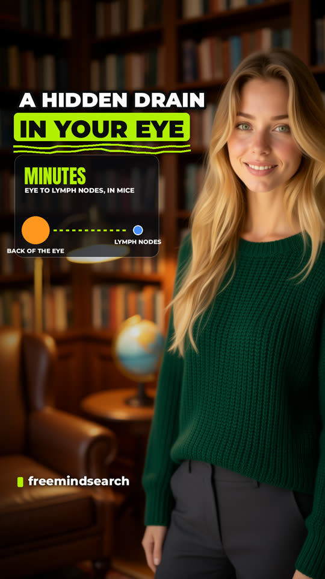

Story
Scientists found a hidden drain at the back of the eye (in mice)
Researchers at the University of British Columbia and the University of Toronto found a previously unrecognized drainage route at the back of the eye. In mice, tracers left the eye and reached nearby lymph nodes within minutes. Researchers say it could become a target for future treatments of diseases such as glaucoma, but so far it has only been studied in mice.
Watch on FacebookWatch on TikTokWatch on YouTube
If your eye could clear its own waste, what would you want it to fix first?
Sources
- Sauntharrajan et al., Identification and Mapping of a Posterior Ocular Lymphatic Outflow (POLO) Pathway Through Choroidal Lymphatics (Translational Vision Science & Technology, 2026): https://doi.org/10.1167/tvst.15.7.23
- ScienceDaily, Scientists discover the eye's hidden cleanup system: https://www.sciencedaily.com/releases/2026/10/261008005254.htm
- News-Medical, Study identifies new waste clearance system in the eye: https://news-medical.net/news/20260717/Study-identifies-new-waste-clearance-system-in-the-eye.aspx
Made with AI: the presenter, voice and visuals are AI-generated. Every story is researched and fact-checked by a person, with its sources listed.